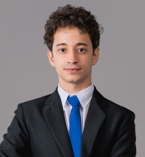
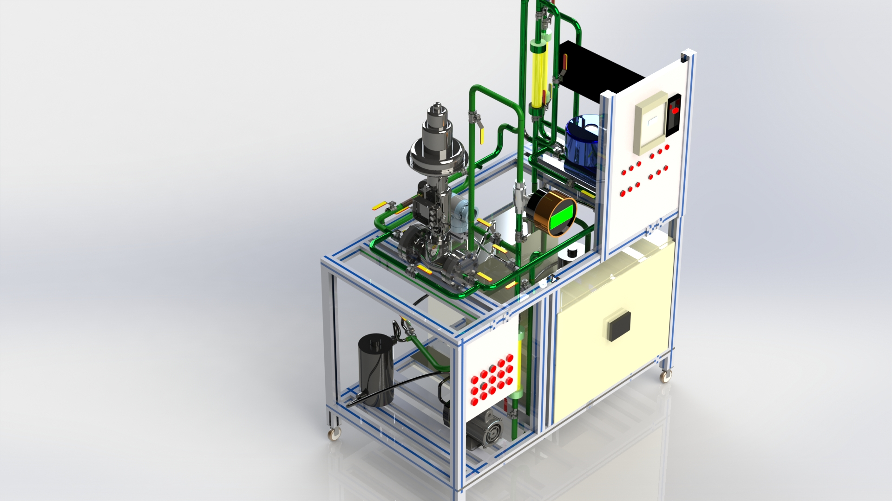

Resumo
Formação
Projetos
Produções
Me chamo Cauan, tenho 23 anos e sou mineiro, natural de Lagoa Santa.
Sou graduado em bacharel em Ciência e Tecnologias na Universidade Federal do Rio Grande do Norte(UFRN).
Atualmente curso Engenharia de Computação na UFRN e tenho uma bolsa de pesquisa do Instituto Metrópole Digital(IMD) juntamente com o Núcleo de Pesquisa em Alimentos e Medicamentos(NUPLAM).
- °UFRN - Graduando em Engenharia da Computação - desde outubro de 2021.
- °UFRN - Bacharelado em Ciências e Tecnologia com ênfase em Tecnologia da Computação - de julho de 2017 concluindo em setembro de 2021.
- °Serviço Nacional de Aprendizagem Industrial (SENAI) - Técnico em Automação Industrial - de julho de 2015 a dezembro de 2016.
- °IMD/UFRN - Bolsista de pesquisa IOT - Desde julho.
- °Departamento de matemática (DMAT/UFRN) - monitor de Cálculo I - de junho a outubro de 2021.
- °Escola de Ciências e Tecnologia (ECT/UFRN) - monitor de Cálculo II - de março de 2020 a abril de 2021.
- °(ECT/UFRN) - monitor de Cálculo I - de abril de 2019 a dezembro de 2019.
- °Centro de Educação (CE/UFRN) - bolsista de apoio técnico - de setembro de 2017 a abril de 2019.
- °SENAI - Técnico Instrumentista - de julho de 2016 a dezembro de 2016.
ARTIGOS
- °SILVA, A. C. ; LIMA, C. M. ; MOREIRA, D. A. . Desenvolvimento e Aplicação de Testes Online Utilizando a Ferramenta Google Forms. In: Encontro integrado dos programas de ensino da UFRN, 2020, Natal-RN. Anais do evento - Encontro integrado dos programas de ensino da UFRN, 2020.
- °LIMA, C. M.; CARVALHO, E. J. F. ; COSTA, V. H. R. S. . Ciclo rápido de exercícios e aprendizagem ativa em disciplinas de matemática.. In: Encontro integrado dos programas de ensino da UFRN, 2019, Natal-RN. Anais do evento - Encontro integrado dos programas de ensino da UFRN, 2019.
TCC do técnico em Automação Industrial
- °PLANTA DIDÁTICA DE VAZÃO - 2016 DOCUMENTAÇÃO
Contribui como instrumentista para a confecção da planta didática
